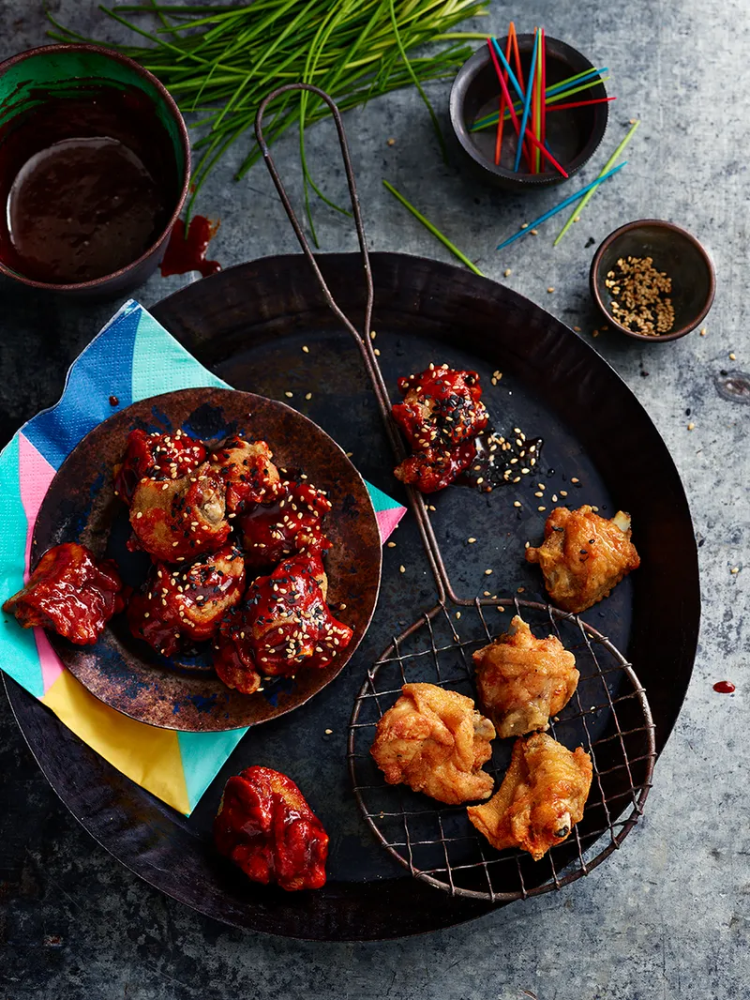

Korean fried chicken

Korean fried chicken
WITH A STICKY, SPICY SAUCE & TOASTED SESAME SEEDS
“There is nothing not to like about this ubiquitous
Korean fried chicken dish, coated in a slick of smoky
gochujang chilli paste, roasted sesame oil, garlic, ginger and vinegar
it is totally addictive. This is a great dish to scale up and make
for a crowd; simply prepare the sauce and fry the chicken wings once in advance,
then a second time just before you are ready to serve. ”
Ingredients
- 1 litre vegetable oil , for frying
- 40 g plain flour
- 40 g potato flour , (or plain flour)
- 30 g cornflour
- 1 teaspoon baking powder
- 1.5 kg free-range chicken wings , tips removed, cut in two through the joint
- 1 teaspoon each of toasted black and white sesame seeds
- ½ a bunch of fresh chives
Sauce
- 5 cloves of garlic
- 3 cm piece of ginger
- 4½ tablespoons gochujang Korean chilli paste
- 4 tablespoons rice wine vinegar
- 3 tablespoons light brown sugar
- 3 tablespoons runny honey
- 1 tablespoon sesame oil
Steps
- For the sauce, peel and crush the garlic, peel and very finely grate the ginger and add
to a pan with the remaining ingredients. Place over a medium-high heat until beginning to bubble;
reduce the heat and cook, stirring, for 10 minutes, or until thickened and syrupy.
Remove from the heat and set aside.
- Prepare your deep-fat fryer if you have one. Otherwise, pour the vegetable oil into a large pot,
to no higher than 5cm below the rim, and use a thermometer. Place over a medium-high heat and,
using a thermometer to guide you, bring the oil to 150ºC.
- Meanwhile, combine the flours, baking powder, 1 teaspoon of black pepper and 2 teaspoons
of sea salt in a bowl. Add the chicken, toss to coat, then gently shake off any excess.
Once the oil is hot, add the chicken and cook, in batches, for 12 minutes. Remove and drain on kitchen paper.
- Increase the temperature of the oil to 185ºC. Return the chicken to the oil,
in batches again, and fry for 6 more minutes, until golden brown and crispy.
Remove and drain as before.
- Reheat the sauce, if necessary, then gently toss with the chicken to coat completely.
Serve the sticky wings piled up with the sesame seeds and thinly sliced chives scattered over.